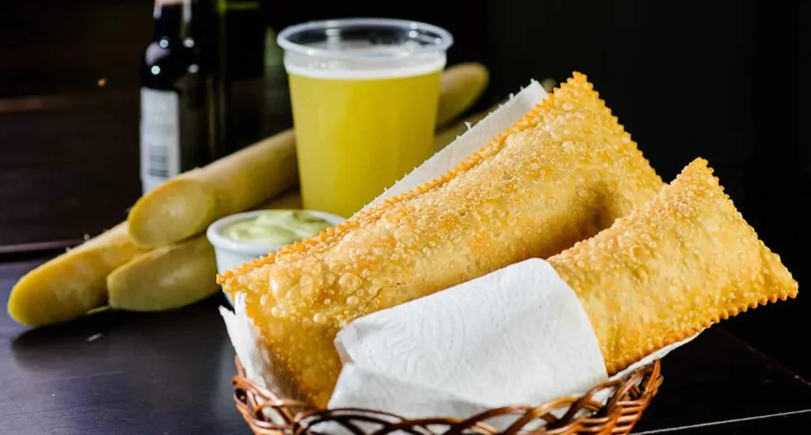

🌽 Agro é importante...
 Liderando produções mundiais como soja, café e carne, o setor combina alta tecnologia, sustentabilidade e pesquisa para alimentar o Brasil e o mundo.Aqui estão os pontos principais sobre o agro brasileiro:Pilar Econômico: O agro não é apenas plantar, mas uma cadeia completa que inclui insumos, produção, processamento e distribuição. Em 2024, o PIB do setor atingiu R$ 2,72 trilhões.Potência Global: O Brasil é um dos maiores exportadores do mundo, com destaque para a soja, açúcar, café, suco de laranja e carnes (bovina e frango).Tecnologia e Sustentabilidade: O setor investe em tecnologia para aumento de produtividade (como o plantio direto e recuperação de áreas) e é considerado um dos mais sustentáveis do planeta, com forte atuação da Embrapa.Impacto Social e Profissional: Representa 1/5 das ocupações no mercado de trabalho brasileiro.Futuro: O foco atual é a agricultura regenerativa, conectividade no campo e aprimoramento da logística para manter a eficiência exportadora.O agro brasileiro evoluiu de um importador de alimentos para um dos maiores produtores mundiais, movido por inovação e trabalho no campo.
Liderando produções mundiais como soja, café e carne, o setor combina alta tecnologia, sustentabilidade e pesquisa para alimentar o Brasil e o mundo.Aqui estão os pontos principais sobre o agro brasileiro:Pilar Econômico: O agro não é apenas plantar, mas uma cadeia completa que inclui insumos, produção, processamento e distribuição. Em 2024, o PIB do setor atingiu R$ 2,72 trilhões.Potência Global: O Brasil é um dos maiores exportadores do mundo, com destaque para a soja, açúcar, café, suco de laranja e carnes (bovina e frango).Tecnologia e Sustentabilidade: O setor investe em tecnologia para aumento de produtividade (como o plantio direto e recuperação de áreas) e é considerado um dos mais sustentáveis do planeta, com forte atuação da Embrapa.Impacto Social e Profissional: Representa 1/5 das ocupações no mercado de trabalho brasileiro.Futuro: O foco atual é a agricultura regenerativa, conectividade no campo e aprimoramento da logística para manter a eficiência exportadora.O agro brasileiro evoluiu de um importador de alimentos para um dos maiores produtores mundiais, movido por inovação e trabalho no campo.

A cana-de-açúcar, originária da Ásia (Nova Guiné/Índia), tornou-se base econômica no Brasil Colônia, introduzida por Martim Afonso de Sousa em 1532 em São Vicente. Com clima favorável, a cultura prosperou no Nordeste, baseada no sistema de plantation (latifúndio, monocultura e escravidão), sendo o maior produtor mundial hoje.Origem e DisseminaçãoOrigem: A cana-de-açúcar é nativa da região da Nova Guiné, na Oceania, espalhando-se posteriormente para a Índia e Ásia.Chegada à Europa: Árabes introduziram a cana e técnicas de produção no sul da Itália e Espanha durante a Idade Média.Expansão: Espanhóis e portugueses levaram a planta para ilhas do Atlântico (Madeira) e depois para as Américas.A Cana no Brasil Colônia (O "Ciclo do Açúcar")Introdução: Martim Afonso de Sousa trouxe as primeiras mudas, plantando-as na Capitania de São Vicente (litoral paulista) em 1532, construindo o primeiro engenho (São Jorge dos Erasmos).Nordeste como Centro: A produção ganhou força no Nordeste, especialmente Pernambuco e Bahia, devido ao solo massapê e clima ideal.Estrutura: O modelo baseava-se em grandes fazendas (latifúndios), monocultura (apenas cana) e, crucialmente, na mão de obra escrava africana.Economia: O açúcar era um produto de luxo extremamente valioso na Europa, gerando grandes lucros para a Coroa Portuguesa.